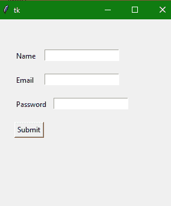

Tkinter 输入小部件
原文：https://www.studytonight.com/tkinter/python-tkinter-entry-widget
在本教程中，我们将介绍 Python 中 Tkinter 的输入小部件及其各种选项，并且借助的几个例子，我们将详细了解这个概念。
如果你需要从用户那里得到一点点文本，比如名字、电子邮件地址或联系号码，那么使用条目小部件。
Entry 小部件主要用于显示一个小文本框，用户可以在其中输入一些文本。
有许多选项可用于更改输入小部件的样式。
需要注意的是输入小部件仅用于从用户处获取单行文本，因为在多行文本的情况下，将使用文本小部件。
这个小部件主要用于接受用户的文本字符串。
Tkinter 条目小部件
条目小部件的语法如下:
w = Entry(master, option=value)
在上面的语法中，主参数表示父窗口。您可以使用许多选项来更改条目小部件 的样式，这些选项以逗号分隔。
Tkinter 条目小部件选项:
条目小部件使用的各种选项如下:
| 选项名称 | 描述 |
|---|---|
bg |
该选项用于小部件的背景颜色。 |
bd |
该选项用于边框的宽度，单位为像素。其默认值为 2 像素。** |
cursor |
该选项有助于将鼠标指针更改为光标类型，并将其设置为箭头、点等。 |
exportselection |
需要注意的是默认情况下，写在输入框内的文本会自动复制到剪贴板。如果不想复制文本，则将导出选择的值设置为 0。 |
fg |
该选项用于指示文本的颜色。 |
font |
该选项用于表示文本的字体类型 |
highlightbackground |
该选项用于表示当微件没有输入焦点时遍历高亮区域中显示的颜色。 |
highlightcolor |
该选项用于表示当小部件有输入焦点时，围绕小部件绘制的遍历高亮矩形所使用的颜色。 |
justify |
如果文本包含多行，该选项用于指定文本在情况下的组织方式。 |
relief |
该选项用于指示边框的类型。该选项的默认值为FLAT。它有更多类似GROOVE, RAISED,RIGID的价值观。 |
selectbackground |
该选项用于指示所选文本的背景颜色。 |
selectforeground |
用于设置所选任务的字体。 |
selectborderwidth |
该选项指示围绕所选任务显示的边框宽度 |
width |
该选项指示要显示的图像的宽度或文本的宽度。 |
textvariable |
在这个选项的帮助下，你将能够从你的输入小部件中检索当前文本，你需要将这个选项设置为StringVar类的一个实例。 |
show |
该选项用于显示其他类型的输入文本，而不是字符串。例如，我们使用星号 ()键入*密码。 |
xscrollcommand |
如果你想让用户输入更多的文本而不是小部件的实际宽度，你可以将输入小部件链接到水平滚动条。 |
insertbackground |
该选项主要表示在插入光标覆盖的区域内颜色作为背景。因此这个颜色将会覆盖小部件的正常背景，T2。 |
Tkinter 输入小部件方法:
输入小部件使用的各种方法如下:
| 方法名称 | 描述 |
|---|---|
delete(first, last=None) |
此方法用于删除小部件内部的指定字符。 |
get() |
此方法用于将条目小部件的当前文本作为字符串获取。 |
icursor(index) |
该方法用于将插入光标设置在指定索引处的字符之前。 |
index(index) |
该方法用于将光标放置在指定索引处书写的字符的左侧。 |
select_clear() |
该方法是在已经做了一些选择的情况下，用来清除选择。 |
select_present() |
如果存在某个选择的，则该方法将返回true，否则将返回false。 |
insert(index, s) |
该方法主要用于在指定索引处的字符前插入指定的字符串 |
select_adjust(index) |
该方法主要包括选择出现在指定索引处的字符 |
select_form(index) |
该方法主要将锚点索引位置设置为索引指定的字符。 |
select_range(start, end) |
该方法用于选择字符存在于指定范围之间 |
select_to(index) |
该方法主要选择从开始到指定索引的所有字符 |
xview(index) |
此方法用于将条目小部件链接到水平滚动条 |
xview_scroll(number, what) |
该方法主要用于使输入小部件水平滚动 |
Tkinter 条目小部件示例
下面我们有一个 Tkinter Entry 小部件的基本例子。让我们看看代码片段:
from tkinter import *
win = Tk()
win.geometry("400x250")
name = Label(win, text = "Name").place(x = 30,y = 50)
email = Label(win, text = "Email").place(x = 30, y = 90)
password = Label(win, text = "Password").place(x = 30, y = 130)
submitbtn = Button(win, text = "Submit",activebackground = "red", activeforeground = "blue")
.place(x = 30, y = 170)
entry1 = Entry(win).place(x = 80, y = 50)
entry2 = Entry(win).place(x = 80, y = 90)
entry3 = Entry(win).place(x = 95, y = 130)
win.mainloop()

在上面的代码示例中，我们完成了以下工作:
创建文本标签来命名文本输入字段。对于所有 3 个文本输入字段(输入小部件)，我们已经创建了三个标签。
我们已经使用
place()几何管理器将标签放置在应用窗口上。然后我们创建了一个按钮，即提交按钮。并使用
place()几何管理器将其定位在应用图形用户界面上。最后，我们有三个条目小部件，它们将创建三个文本输入字段。并使用
place()几何管理器将其定位在应用图形用户界面上。
摘要
在本教程中，我们学习了如何在创建 GUI 应用时使用 Tkinter Entry 小部件来创建文本输入字段。